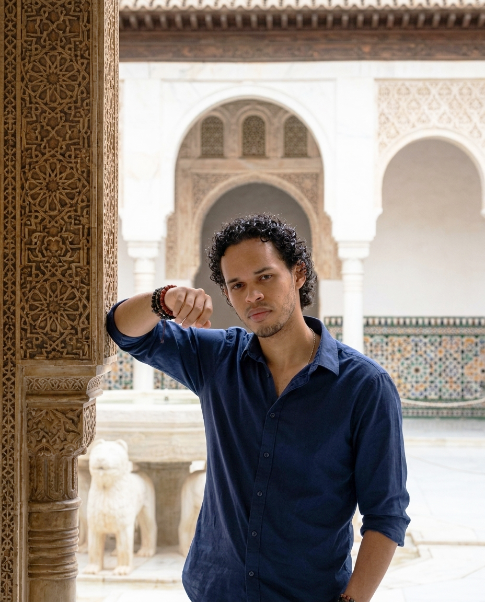

FR
/
EN
/
ES

Ludovic Randrianantoandro
Designer graphique & web
Depuis 2015
LR
01
Identidad visual
Logos, chartes graphiques et systèmes de marque pensés pour rester cohérents sur tous les supports.
Voir le menu complet →
02
Diseño web
Sites et interfaces conçus pour être clairs, rapides et agréables à utiliser.
Voir le menu complet →
03
Comunicación
Supports print et digitaux qui portent un message clair, du concept à la mise en page finale.
Voir le menu complet →